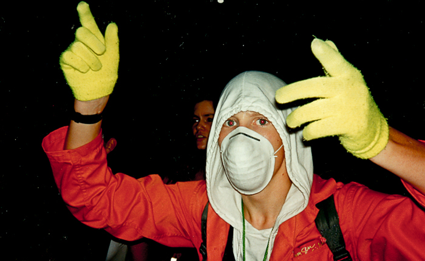

Rave School Reunion
{kind=link}

The techno scene that grew out of post-reunification Berlin during the ’90s was a thing of legends. Following the fall of the Berlin Wall in 1989, the East and West sides of the city drew together, with an electric party scene rising out of the ravaged urban landscapes and abandoned buildings that opened up in the city’s East after the fall of the GDR—where more than a third of the buildings were lying unoccupied. Tilman Brembs was there to photograph it all.
“We have definitely lived through an important and irretrievable time, and I do not want to miss a minute,” Tilman says of his time covering the Berlin party scene during the ’90s, when he worked as a professional photographer for the Frontpage streetpress. A few years ago he dug up his print archive for the Zeitmaschine website (which translates from German into “time machine”).
“Zeitmaschine is a chronicle of this time, showcasing people bringing this time to life, exhibiting the fashion, the lifestyle and the artists,” he says of his project. “There are many people who can be seen in the photos that actually have no pictures from that time otherwise. My photos are somewhat of a ‘visualized confirmation of existence.’”
An oversupply of cheap living space allowed Berlin to develop into a mecca for alternative culture, with it early promoters making an entrepreneurial and creative use of that space, with almost all of the city’s clubs set within derelict buildings. One such standout was Tresor, set in the dark, sweaty basement vault of an abandoned department store, adopting the sounds of Detroit techno and helping eventually transform it into the steely Berlin techno we know today.
The Wall had cast a shadow over the city, creating a claustrophobic vibe for those living in the West as well as those from the East unhappy with GDR repression. However, its fall brought a tangible sense of a fresh start as the East united with the West to celebrate their newfound freedom—and this is what Tilman emphasizes above all.
While Tilman now works as a professional photographer outside the party scene, and hung up his raving shoes a long time ago, he’s full of positive things to say about those magical days in the ’90s and the international nightlife mecca Berlin has evolved into today.
Insomniac caught up with Tilman for a coffee in an East Berlin park, where he was walking his little white dog in the afternoon. The park just around the corner from the towering GDR statue that is one of the city’s most prominent relics from it’s not-too-distant Soviet past. Below is Tilman’s account of his experiences with the 90s club scene.
I moved to Berlin in 1982, and have lived in the city now for nearly 35 years. When I came to Berlin, the Wall that separated East from West was still standing. So I can say I knew Berlin before the Wall fell, while the Wall was falling, and after it had fallen. I’m from Frankfurt originally, which is a big capitalistic city—there, I worked as a biological technical assistant, but it was only two years before I realized it was a job lacking all creativity.
West Berlin was a bit like an island. Because of the Allied military presence there, young people didn’t have to do deal with the military draft like rest of West Germany at the time, so it attracted many different kinds of people. A lot of people had no work: some may have gone and done some creative stuff, but many went out and partied all night. A lot of the music was very harsh. Nick Cave was living in Berlin at the time, and Berlin itself was a little like Nick Cave—very serious. But the acid house that was imported over from the UK was a great thing for the city, and generated a lot of positivity and smiling faces.
And then the Berlin Wall fell, and everything changed. I lived nearby to the Wall, and I took a lot of photographs when it came down—I was there nearly every evening. Then, two years later, techno really began in Berlin and Tresor opened. It was 25 years ago this year.
We used to go clubbing in West Berlin, but I remember one weekend I was chatting with a friend, and he was telling us about this new club in East Berlin on Potsdamer Platz. It’s a very busy area now, but there was nothing at that point—the area was totally derelict. We decided we wanted to check it out, so we left the party to go to Tresor. We walked downstairs and it was like descending into a cave. Water was dripping down from the walls—it was so crazy. After a few hours we went back to the other club and told everyone, “Hey this is amazing. Come to Tresor!”
After that, I was at Tresor nearly every weekend. I began working there, first cleaning and then later behind the bar, and I did that for maybe one or two years. It wasn’t just for the money, it was more to have an entrance into the scene and be involved. I was taking photos from the start.
Nobody really had cameras in those days—there were no smartphones taking photos. I started working the Frontpage magazine, a very famous streetpress for the techno scene. Because I had a press job, I had access to all the clubs; still, for me it was more than a job, because I also partied with the people I was photographing. And they weren’t afraid of my photos. It was my rule that I never publish anything incriminating that might cast anyone in a bad light. If people know that they can trust you, they will open up to you.
We’d start partying on Thursday night, and continue until Monday morning. It really was a special time. What made it unique was that we were partying among the abandoned buildings of East Berlin, but it was also special how the East and West came together after the fall of the Wall. The West was capitalistic, and we had everything we needed, but these people in the East had less. They taught us that money wasn’t important, that you really don’t need much in life. We made a lot of friends from the East, and fostered this spirit of people coming together.
The thing I remember the most is the contrast between the two main clubs Tresor and E-Werk—they were two totally different scenes. Tresor was more hardcore; it was a new Detroit sound, with all of these DJs like Jeff Mills making their first European appearance there. E-Werk was on the more glamorous side of things, but it had its special Berlin style too—it had its own improvised fashion, and was definitely not so shiny like the other dance capitals. It was cheaper, and wasn’t about how much money you had to spend. It was that mix of factors that made it special. The two clubs were actually only 300 meters away from each other. And we’d go back and forth, back and forth…
Some of my most memorable parties? I remember New Years Eve from 1991 to 1992: It was a party called We Don’t See You, and it had a camouflage theme. It was in the basement of one of those old abandoned East Berlin buildings, and there were no windows. We had a fog machine, and we pushed the button so hard that it was fogged up to the point where nobody could see anything. There weren’t any windows for the fog to come out of, so it all billowed out the building vents and filled the streets with smoke. Leipziger Straße, a huge street on Potsdamer Platz, utterly flooded with smoke. When the fire department arrived, they thought fire had engulfed everybody, that it had been a massacre. And of course they came down to find a bunch of happy ravers—“Oh no, everything is fine, we’re having a great party!”
I will also never forget the night when The Prodigy played the E-Werk. I’d just gotten a brand new Polaroid camera that day. The first picture I developed from that night had me taking a selfie with Keith on stage, but I don’t actually remember anything at all from that crazy night.
Clubbing is a big business now. Someone like Paul van Dyk earns tens of thousands of dollars a show, but he started back at E-Werk, a very small venue. There were only 200 people, and it was more like this “trance music.” We didn’t have a big trance scene in Berlin: It was more Frankfurt where that was happening. But he did his thing, and he grew bigger and bigger, and now he’s doing the sounds for the new airport they’re opening soon in Berlin.
Nowadays, there’s a strict rule about photography not being allowed in Berlin clubs, and I think this is good thing. People overdo it, and everybody has a camera now. And it’s not just because of the photos— it’s also the social networks where these photos can be published. A lot of the time these ridiculous situations make it onto Facebook, and that’s not very cool—people should have their privacy and feel free. It was also more difficult back then, because you only had 36 pictures on a roll before you had to change the film. Or you’d have to take your camera somewhere—it wasn’t just a matter of getting your phone out. You also couldn’t just take a camera with you; you had to know the owners, know the partygoers themselves, and they had to trust you.
I left being heavily involved in the scene in 1999. I started Zeitmaschine in 2007 back when Facebook wasn’t big yet in Germany. It was cool that it grew so big; it was like a digital class meeting, or a “rave school reunion.” I had only good experiences with it.
I think it’s completely normal that a city or a scene is changing. I would never say that today is any better or worse than yesterday. People can be very nostalgic at times. It’s the same with many comments on Zeitmaschine. “Oh, we had the best time, I wish I would be in the ’90s again.” I don’t like when people say that. You get old, and there are younger people that come to take your place. They’re celebrating their youth, and it is their time now.